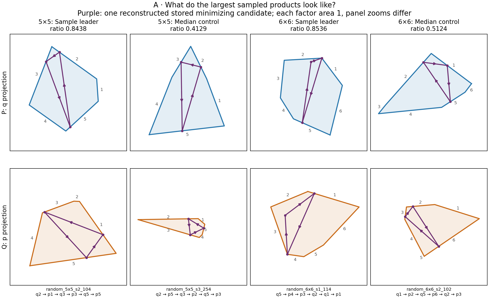
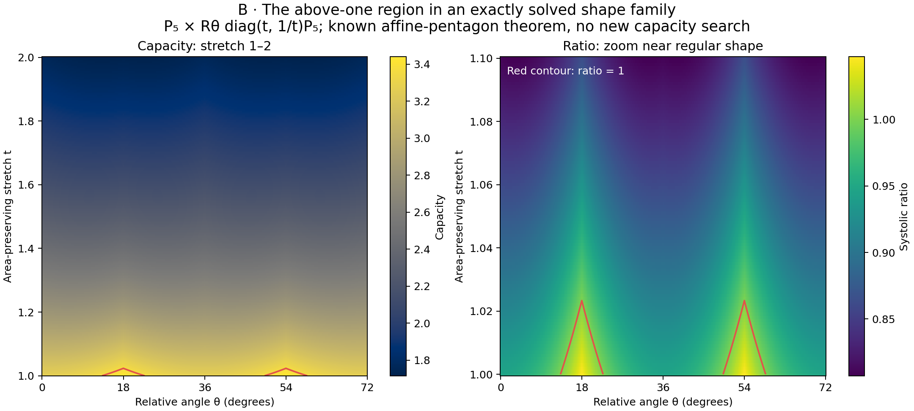
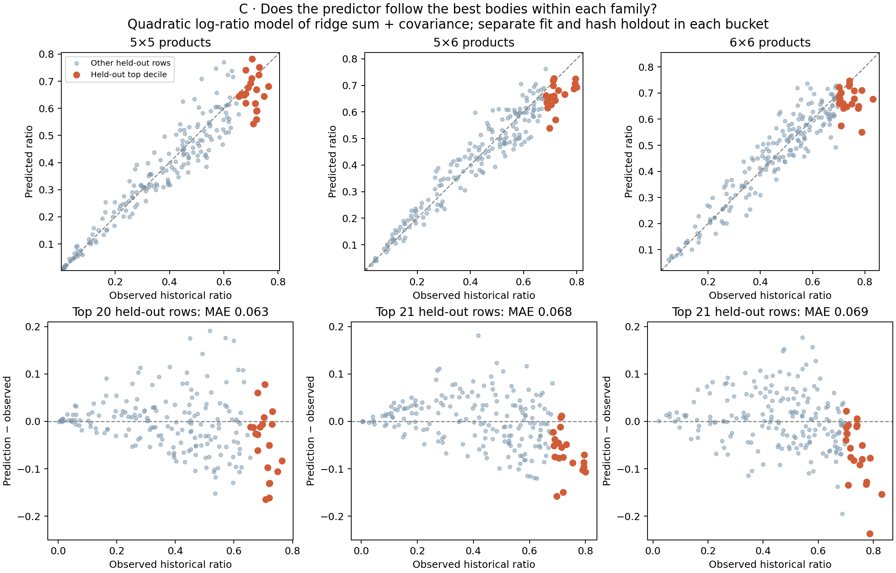

Three ways to explain the upper tail
Concrete alternatives for reader feedback. A shows the objects; B shows a geometric mechanism in an exactly solved family; C shows what a bulk predictor misses. Each figure is available as a PDF with reproducible data.
A · Make the bodies concreteSample leaders beside ordinary products, with a stored orbit

Each leader is compared with a median control from the same 1,024-row bucket. Purple curves are actual q/p projections recovered from one stored minimum-action word; arrows follow time. Gray numbers label facets in the word below each column. Factors have area one for display; panel zooms differ.
Takeaway: the sampled leaders are tangible shapes, but these four pictures do not establish a universal extremal motif. One returned word does not describe all minimizers or certify uniqueness. Positive weights, closure, boundary constraints and action agreement were numerically checked; no global capacity search was rerun.
PDF · Shapes, word, weights, trajectory and checks
B · Show an exactly solved mechanismCapacity changes with stretch and relative angle

The declared family is P₅ × Rθ diag(t,1/t)P₅: one regular pentagon is fixed and the other stretched without changing area, then rotated. The left panel shows capacity for stretch 1–2. The right zooms near the regular shape and shows systolic ratio; red marks ratio one. Values come from the already proved affine-pentagon formula, evaluated numerically for display.
Takeaway: this particular stretch rapidly leaves the above-one region. The known sharp affine-class maximum is (3+√5)/5 ≈ 1.04721, attained here at t=1 and θ=18° or 54°. This is an illustration of an existing theorem, not a new result about arbitrary polygon products.
PDF · Full capacity/ratio grid · Existing theorem and proof
C · Explain what the upper tail addsThe predictor follows the bulk and misses many of the best bodies

The existing quadratic log-ratio model uses ridge sum and covariance eccentricity. Here it is fitted separately in each bucket, using a deterministic 80/20 representation-hash split. Orange marks the highest 10% of held-out ratios separately in each bucket. The lower panels show signed error on a common scale.
| Product bucket | Held-out MAE | Top-decile MAE | Top-decile median signed error |
|---|
| 5×5 | .045 | .063 | −.027 |
| 5×6 | .043 | .068 | −.070 |
| 6×6 | .047 | .069 | −.056 |
Takeaway: even after training within each family, the largest held-out ratios are systematically underpredicted in these three buckets. This makes the remaining geometric question visible. It does not rule out better predictors. The exact moment obstruction gives one reason low-order summaries can miss relevant angles.
New retrospective evaluation of the existing model, using retained historical numerical ratios and numerical volumes. The full computation covers 18 buckets; this figure shows the three product buckets with both factors having at least five sides. Top-decile counts are 20, 21 and 21. This family-specific training protocol differs from the earlier pooled and leave-bucket-out evaluations.
PDF · All held-out predictions · 18-bucket metrics, coefficients and protocol
Provisional editorial fit: C best supports a chapter claim about the upper tail; B best supports a geometric explanation in a solved family; A best introduces the sampled bodies. Full source identities, interpretation limits and reproduction · Verification receipt.
[review: /root/owner_review]